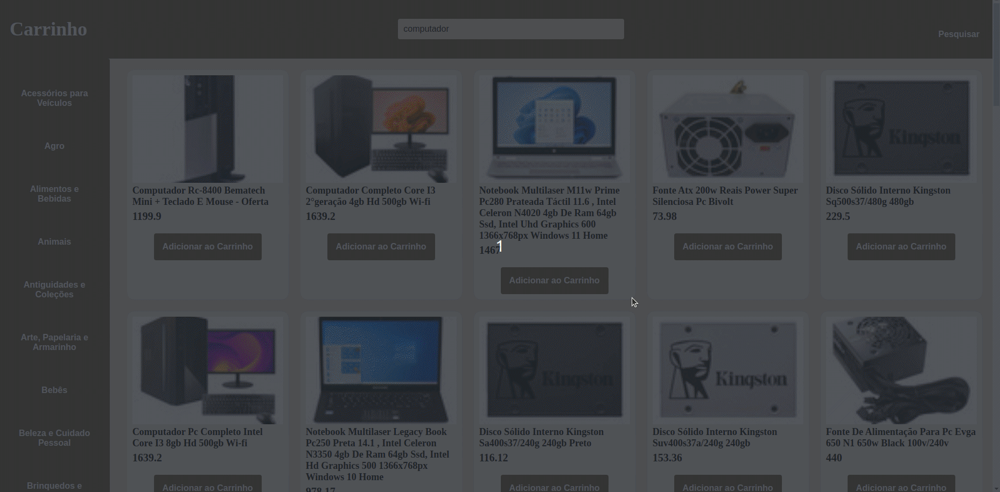
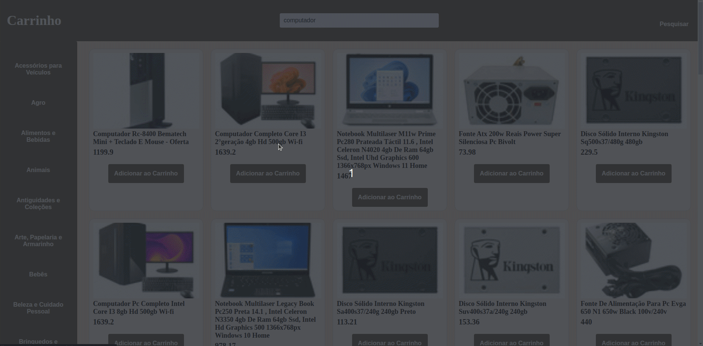
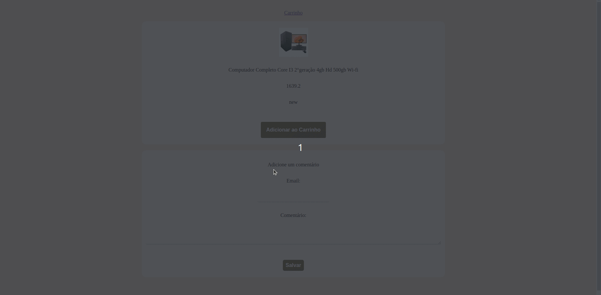

Introdução:
Aqui é possível visualizar o projeto em pleno funcionamento e explorar suas principais funcionalidades por meio de printscreens e gifs. Caso deseje executar o projeto em sua própria máquina ou queira ver detalhes sobre linguagens e habilidades usadas, basta selecionar a opção "GITHUB" no menu superior, onde encontrará detalhes sobre a instalação do projeto em seu ambiente local. Lembre-se de me contar o que achou do projeto, ficarei imensamente feliz em receber o seu feedback. Ou caso tenha alguma dúvida sobre o projeto, você pode clicar em "DUVIDAS" e me mandar uma mensagem diretamente ou ir em HOME, lá você encontra todas as minhas redes sociais.
Projeto Online Store:
Esse projeto é uma aplicação React de uma versão simplificada, sem persistência no banco de dados, de uma loja online, desenvolvida em grupo. Esse projeto conta com busca de produtos por termos e categorias a partir da API do Mercado Livre, interagir com os produtos buscados de modo a adicioná-los e removê-los de um carrinho de compras em diferentes quantidades, visualizar detalhes e avaliações prévias de um produto, bem como criar novas avaliações e simular a finalização da compra dos itens selecionados.
Executando Projeto:
Ao executar a aplicação, a home da loja é exibida, onde o usuário pode clicar nas mais diversas categorias de produtos ou pesquisar por um produto em específico.

Depois de pesquisar por um produto, vários produtos que tem relação com a pesquisa são exibidos. O usuário tem a opção de clicar em um produto para ver detalhes do mesmo, ou pode adicionar o produto ao carrinho.
Como você pode notar, ao adicionar vários produtos e ir para o carrinho, é possível ver todos os produtos adicionado presente, onde o usuário pode finalizar a compra. Contudo, o usuário pode clicar no produto e ter acesso ao seus detalhes, observe abaixo:
Mas caso queira só comprar, o usuário pode adicionar ao carrinho a partir da tela de detalhes do produto. O usuário também tem a possibilidade de adicionar um comentário sobre o produto.
Você também pode testar o projeto, caso queira conhecer essa loja por trás da tela, volto a te convidar para visitar o repositório do projeto no github, basta clicar aqui